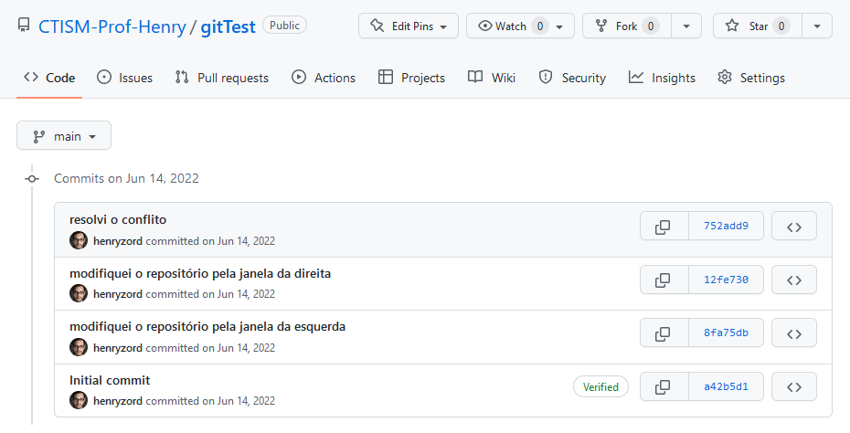

Nenhum conflito detectado¶
Se nenhuma das duas telas anteriores aparecer para você, quer dizer que
com o git pull, o git conseguiu com sucesso fazer o merge entre o
código que tem na sua máquina, e o código que tem no servidor.
Você pode prosseguir normalmente a partir de então, fazendo um
git push origin main. Com isso, tanto seu código, quando o do seu
colega, estarão no Github:
